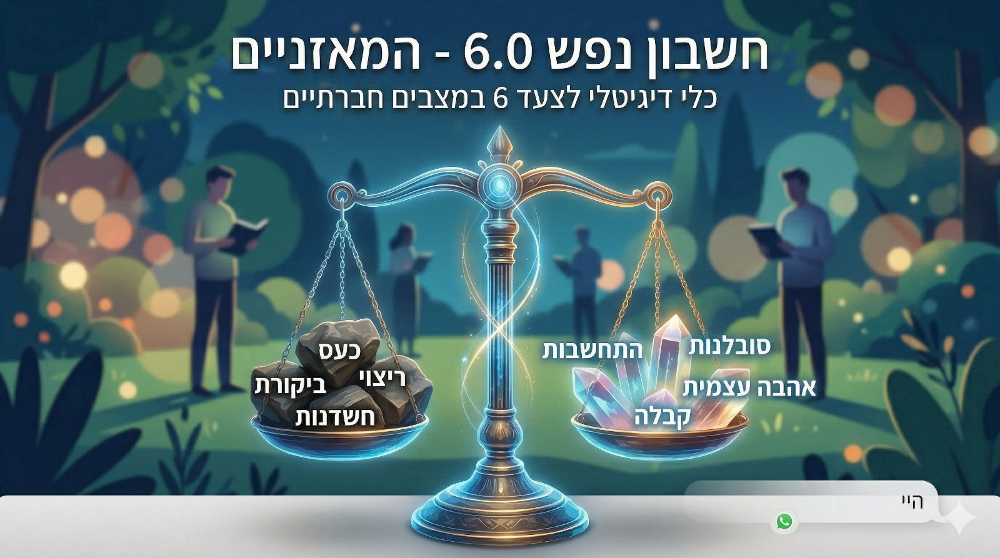

We all sometimes experience difficulties, friction, or frustration with other people. Step 6 is our tool to identify the character defects that pop up in these situations (such as criticality, a need for control, anger, or people-pleasing), and replace them with spiritual virtues (such as acceptance, consideration, humility, and patience).
Simply click the bot link below and send it the following message: "Hi, I want to start working on the sixth step."